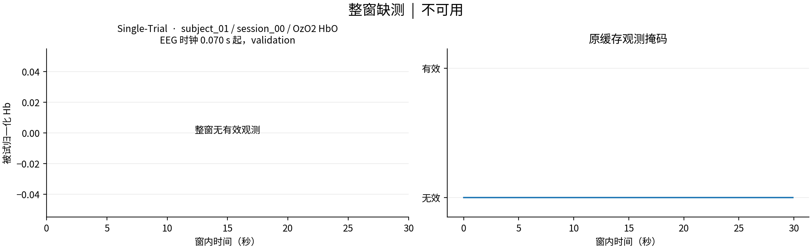
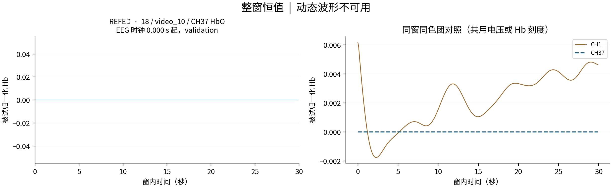
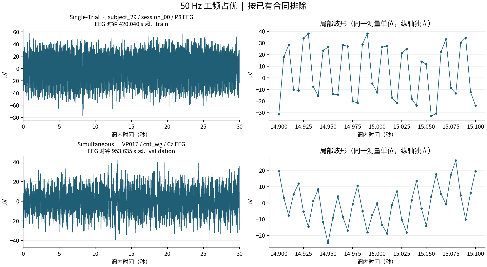
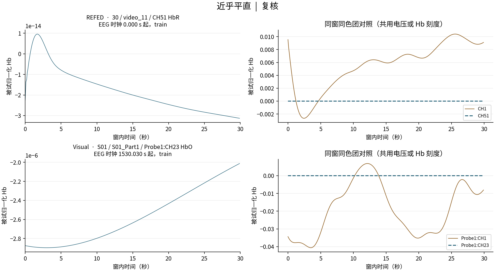
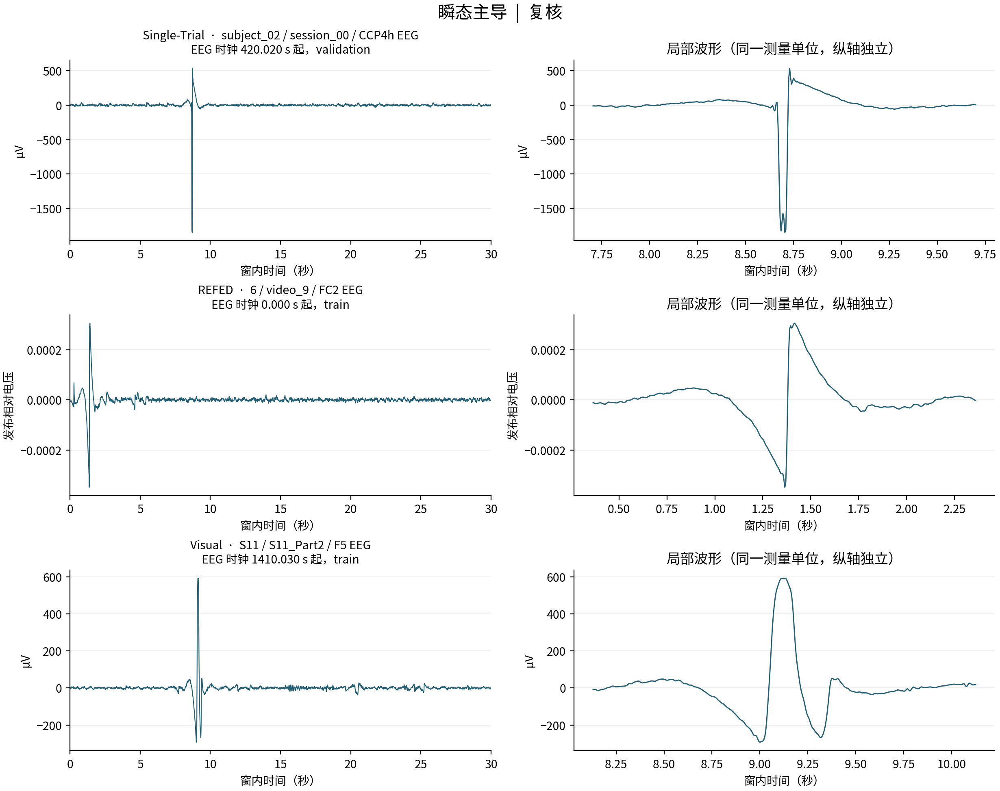
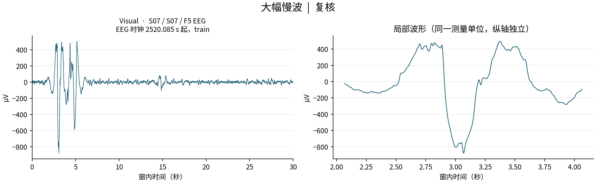

四库 80 名公开训练／普通验证被试。按 G0 预先确定的 7,806 个非重叠 30 秒评分窗，读取 V3 观测及其观测掩码，保留原位置和原单位。每个 EEG 电极、Hb 位置的每个色团分别计数。分母包含缺测。短尾、专用回归窗、缓存在建时已排除的位置与未纳入此网格的记录不在分母内。多标签可重叠。
判定范围为缓存提供的处理后输入。尖峰、异常慢波和极低幅值的病因需要其它证据。滤波后的数据不能用于完整估计采集端削顶率。训练尺度沿用历史 G0 数据集／位置尺度，缺少尺度的轨迹只跳过依赖尺度的判据。频谱使用未加窗全窗单边功率，包含 DC 与 Nyquist。示例选每个检出库内最接近该类诊断量中位数的实际波形。
分库分区频次与分母 · 全部命中被试与位置（含分母） · 逐窗时间和原父窗 · 历史模型误差 · 图例溯源
| 模式 | EEG | HbO | HbR | 处理与判据 |
|---|---|---|---|---|
| 整窗缺测 | 0 | 236 | 236 | 不可用。30 秒内有效且有限的观测点数为零。 |
| 整窗恒值 | 0 | 38 | 38 | 动态波形不可用。所有采样均有效，30 秒内最大值等于最小值。 |
| 50 Hz 工频占优 | 1700 | — | — | 按已有合同排除。EEG 的 49–51 Hz 能量超过未加窗、未去均值的全窗能量的 50%。 |
| 近乎平直 | 0 | 29 | 30 | 复核。非恒值，窗内 SD 低于该库该位置冻结训练尺度的万分之一。Hb 两色共用尺度。 |
| 瞬态主导 | 30 | 0 | 0 | 复核。减去全窗中位数后，最强的连续 0.5 秒占全窗平方和至少 90%。 |
| 大幅慢波 | 2 | — | — | 复核。EEG 窗内 SD 至少为该位置训练尺度的 10 倍，且 1–4 Hz 占全窗能量至少 80%。 |
| 部分缺测 | 0 | 0 | 0 | 支持不完整。部分观测掩码为假或数值非有限，其余点有效。 |
| 局部冻结 | 0 | 0 | 0 | 片段复核。非恒值窗口中至少连续 2 秒的样本完全相等。 |
| 疑似削顶平台 | 0 | 0 | 0 | 复核。非恒值窗口中至少 20% 的采样精确落在同一侧极值。 |
| 少数离散电平 | 0 | 0 | 0 | 复核。非恒值窗口全程仅有 2–4 种电压或 Hb 数值。 |
| 跨位置波形复制 | 0 | 0 | 0 | 空间身份复核。同窗、同模态（Hb 同色）两个不同位置非恒值且全程逐点相同或反号相同。两端均计数。 |
| 60 Hz 窄带占优 | 0 | — | — | 复核。EEG 的 59–61 Hz 能量占全窗能量超过一半。 |
| 其他单频占优 | 0 | — | — | 复核。≥1 Hz 且在两条工频带外，单一 FFT 频点占 EEG 全窗能量至少 90%。 |
| 大幅高频 | 0 | — | — | 复核。EEG 窗内 SD 至少为该位置训练尺度的 10 倍，且 30–45 Hz 占全窗能量至少 80%。 |
EEG 分母 268,976；HbO、HbR 各 288,226。确定无动态信息与可疑形态分开解释。全窗缺测只能画掩码。未检出类别没有实测阳性图。






按物理记录、电极或 Hb 位置及 200 Hz 起点匹配既有训练评分面板。EEG 为 K15351 训练人交叉验证，Hb 为冻结 Hb111 训练面板回放。表中逐位置窗口计算 X 的 MSE / 其冻结训练方差，再取窗口中位数，均值另见 CSV。无命中不表示编码成功。无标记组是同库同模态参照，组间暴露不匹配，不能推断因果。
| dataset | label | pattern | n | finite | median_X_NMSE | mean_X_NMSE |
|---|---|---|---|---|---|---|
| eeg_fnirs_single_trial | EEG | line50 | 111 | 111 | 53.541855 | 43.411753 |
| simultaneous_eeg_nirs | EEG | line50 | 5 | 5 | 1.911204 | 2.573376 |
| refed | EEG | transient | 1 | 1 | 32.338150 | 32.338150 |